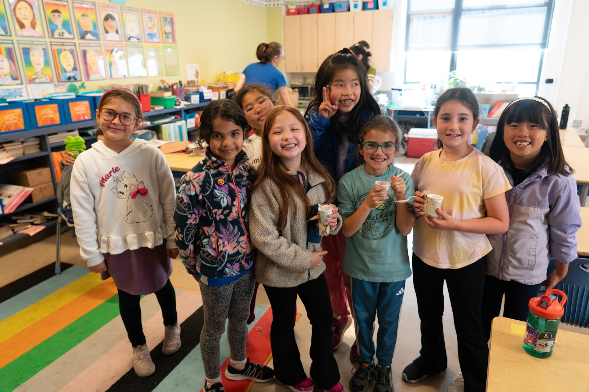

STEAM DAY · FEBRUARY 17, 2027
Big ideas.
Bright futures.
A day to wonder, make,
test, and try something new.
This is what curiosity looks like.
Read a description of the video
A lively montage from STEAM Day 2026 shows students making art, building bridges and structures, testing ideas, and collaborating in classrooms. It ends with a collage thanking the volunteers. The soundtrack is instrumental; there is no spoken dialogue.
ONE DAY. SO MANY POSSIBILITIES.
Learning gets
hands-on.
STEAM brings science, technology, engineering, art, and math together through making and discovery. At Peabody, it’s a chance to ask “what if?”—and find out together.
Explore activity ideasMake room
for discovery.
Explore the K–2 draft schedule.
Wednesday, February 17, 2027.
A little help.
A big impact.
Bring your enthusiasm. Help a student
turn a question into a discovery.

Better, together.The next big idea
starts with a little spark.
Join us at George Peabody Elementary. Explore the draft schedule and find your way to help.
Plan your day ↗